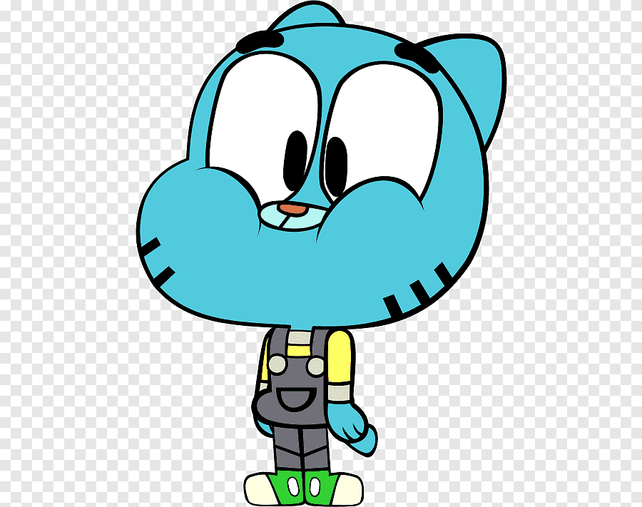
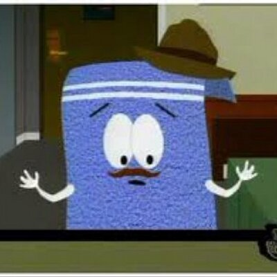

Intereses de Ferchis
Es importante conocer cuales son los temás de interes de Ferchis(aunque puede entablar conversación de varios temas)Personajes favs de Ferchis
| Gumball | Kenny | Na Heedo |
|---|---|---|
|  | |
|
| Me gusta mucho Gumball porque es muy chistoso y hasta en cierta forma me identifico con el, ademas de que el increible mundo de Gumball me gusta mucho. | Kenny es uno de los mejores personajes de South Park, sus muertes son epicas y es pobre como yo xd | Na Heedo es mi personalidad literal es el personaje que más se parece a mi y ambas somos muy lloronas. |
| Kim Bok-ju | Toallin | |
|  | ||
| Me gusta su personalidad y que es muy tonta para captar indirectas pero tambien es muy decidida cuando hace algo. | Estoy en un serio problema al decir cual es mi personaje fav de SP porque Toallin es épico,con solo decir que es una toalla que habla y que se le van las cabras cuando fuma |
Pelis favs y Canciones Favs
Temas favs
Comida fav
 bibimbap
bibimbapDibujito pro